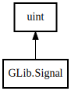

Signal
Object Hierarchy:

Description:
[
CCode ( cname =
"guint" ) ]
public struct Signal :
uint
Content:
Static methods:
- public static Signal @new (string signal_name, Type itype, SignalFlags signal_flags, uint class_offset, SignalAccumulator? accumulator, void* accu_data, SignalCMarshaller? c_marshaller, Type return_type, uint n_params, ...)
- public static ulong add_emission_hook (uint signal_id, Quark detail, owned SignalEmissionHook hook_func)
- public static void chain_from_overridden (Value[] instance_and_params, out Value return_value)
- public static void chain_from_overridden_handler (void* instance, ...)
- public static ulong connect (void* instance, string detailed_signal, Callback handler, void* data)
- public static ulong connect_after (void* instance, string detailed_signal, Callback handler, void* data)
- public static ulong connect_closure (void* instance, string detailed_signal, Closure closure, bool after)
- public static ulong connect_closure_by_id (void* instance, uint signal_id, Quark detail, Closure closure, bool after)
- public static ulong connect_data (void* instance, string detailed_signal, Callback handler, void* data, ClosureNotify destroy_data, ConnectFlags flags)
- public static ulong connect_object (void* instance, string detailed_signal, Callback handler, Object gobject, ConnectFlags flags)
- public static ulong connect_swapped (void* instance, string detailed_signal, Callback handler, void* data)
- public static void emit (void* instance, uint signal_id, Quark detail, ...)
- public static void emit_by_name (void* instance, string detailed_signal, ...)
- public static unowned SignalInvocationHint? get_invocation_hint (void* instance)
- public static bool has_handler_pending (void* instance, uint signal_id, Quark detail, bool may_be_blocked)
- public static uint[] list_ids (Type itype)
- public static uint lookup (string name, Type itype)
- public static unowned string name (uint signal_id)
- public static Signal new_class_handler (string signal_name, Type itype, SignalFlags signal_flags, Callback? class_handler, SignalAccumulator? accumulator, void* accu_data, SignalCMarshaller? c_marshaller, Type return_type, uint n_params, ...)
- public static Signal new_valist (string signal_name, Type itype, SignalFlags signal_flags, Closure? class_closure, SignalAccumulator? accumulator, void* accu_data, SignalCMarshaller? c_marshaller, Type return_type, uint n_params, va_list args)
- public static Signal newv (string signal_name, Type itype, SignalFlags signal_flags, Closure? class_closure, SignalAccumulator? accumulator, void* accu_data, SignalCMarshaller? c_marshaller, Type return_type, Type[]? param_types)
- public static void override_class_closure (uint signal_id, Type instance_type, Closure class_closure)
- public static void override_class_handler (string signal_name, Type instance_type, Callback class_handler)
- public static bool parse_name (string detailed_signal, Type itype, out uint signal_id, out Quark detail, bool force_detail_quark)
- public static void query (uint signal_id, out SignalQuery query)
- public static void remove_emission_hook (uint signal_id, ulong hook_id)
- public static void stop_emission (void* instance, uint signal_id, Quark detail)
- public static void stop_emission_by_name (void* instance, string detailed_signal)
Inherited Members:
All known members inherited from struct uint